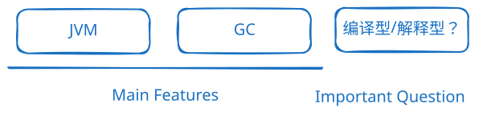
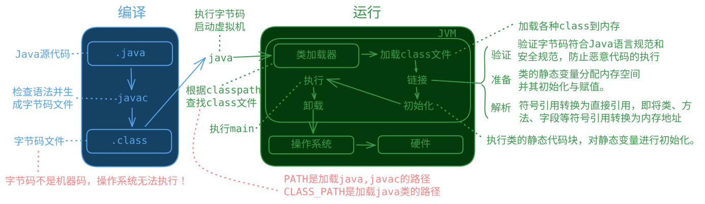

- 面向对象：继承、封装、多态 - 健壮：强类型机制、异常处理 - 垃圾自动收集（Garbage Collection，简称GC）：在传统的编程语言中，需要手动分配和释放内存，容易出现内存泄漏和悬挂指针等问题。GC可以自动分配和释放内存。 - 跨平台：JVM（class 文件运行在各操作系统的 Java 虚拟机上） - 解释型语言（class 文件由解释器运行）🤔 为什么有人说 Java 是“编译与解释并存”的语言？ 📖 编译器将源代码编译为字节码（字节码不是二进制，不是机器码），虚拟机解释或 JIT 编译执行生成的机器码

（重点）Java的加载与执行（java Hello 的执行过程）：
1. 执行java Hello后，会启动 JVM
2. JVM 会启动类加载器（classloader）
3. 类加载器加载 Test 类，自动去硬盘上找Hello.class字节码文件
4. 找到Hello.class字节码文件之后将其加载到 JVM 当中。
5. JVM 将 Hello.class 字节码解释为机器码。
6. 操作系统执行机器码和底层硬件平台进行交互。